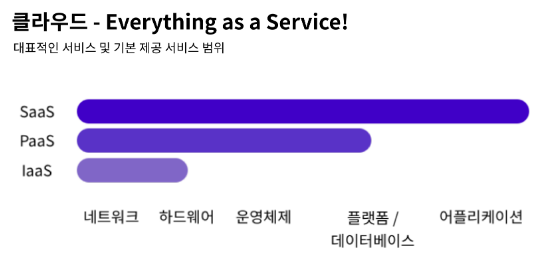

클라우드 등장 이전에는 흔히 말하는 전산실 등에 컴퓨터를 배치하고 인터넷을 연결하여 서비스를 제공하였다.
만약 서버가 요청에 대한 수용 능력이 한계에 도달한다면 같은 공간에 더 많은 컴퓨터를 제공하여 한 대가 해결할 수 있는 요청을 여러 대가 나누는 방식을 사용하거나 컴퓨터 한 대의 성능을 높이는 방식을 사용하였다.
하지만 이런 방식은 몇 가지 문제점들을 가지고 있다.
첫 번째는 주기적인 관리가 필요하다는 점이다.
흔히 말하는 서버실에는 종종 고장이 나거나 인터넷과 연결이 되지 않는 컴퓨터가 생기기도 한다.
이런 상황이 발생한다면 이를 해결하기 위한 인력 및 비용이 투입되어야 했다.
그러나 점차 관리해야 하는 컴퓨터 및 다른 전자기기의 수가 많아지는 만큼 투입되어야 하는 인력 및 비용도 증가하기 시작했다.
두 번째는 공간의 한계가 있다는 점이다.
예전의 방식은 서버실이라는 공간에 컴퓨터를 배치해 두고 필요할 때마다 추가적인 컴퓨터를 추가하는 방식으로 수용 능력을 향상해 왔다.
하지만 이런 방식은 공간이 부족하여 컴퓨터를 더는 배치할 수 없는 문제에 직면하게 된다.
이런 상황에서 서버의 컴퓨팅 능력을 늘리려는 방법은 컴퓨터의 성능을 높이고 부피를 줄여 좀 더 많은 컴퓨터를 같은 공간에 배치하는 방법이었다.
이런 상황에서 추가적인 서버 증설이 어렵게 되자 일부 거대 기업은 데이터 센터라는 거대한 건물을 세우기 시작했다.
이때부터 데이터 센터의 유휴 자원을 대여하는 서비스가 등장하기 시작했다.
즉 서버의 자원과 공간, 네트워크 환경을 빌려 사용하는 클라우드 컴퓨팅이 시작된 순간이다.
이러한 환경을 온프레미스라고 부른다.
현대의 클라우드 컴퓨팅은 앞서 설명한 데이터 센터와 비슷한 역할을 하지만 물리적인 컴퓨터가 아닌 가상 컴퓨터를 대여한다는 점이 다르다.
이는 가상화(Virtualization) 기술의 발전으로부터 비롯되었다.
최근의 가상화 기술을 사용하는 클라우드 서비스는 기존의 온프레미스 형식과는 달리 다음과 같은 장점이 있다.
필요할 때마다 컴퓨팅 능력을 유연하게 조절할 수 있다.
고정적인 비용이 들어가는 온프레미스와는 달리 사용한 만큼의 요금만 지불하면 된다.
컴퓨터의 스냅샷을 이용해 다른 컴퓨터로 즉시 이주(migration)가 가능하다.
클라우드 환경에도 단점이 존재한다.
운영 환경 자체가 클라우드 제공자에게 종속되어 버리므로 클라우드 서비스에 문제가 생기면 내가 배포하고 관리하는 환경에도 영향이 미친다.
이런 클라우드는 모든 것을 서비스화하는 것을 목표로 한다.
대표적인 클라우드 서비스의 형태는 SaaS, PaaS, IaaS 세 가지이다.

SaaS(Software as a Service)는 클라우드 제공자가 당장 사용 가능한 소프트웨어를 제공하는 경우 대부분 SaaS에 해당한다.
PaaS(Platform as a Service)는 클라우드 제공자가 데이터베이스, 개발 플랫폼까지 제공하는 경우 대부분 PaaS에 해당한다.
IaaS(Infrastructure as a Service)는 클라우드 제공자가 가상 컴퓨터까지 제공하는 경우 대부분 IaaS에 해당한다.